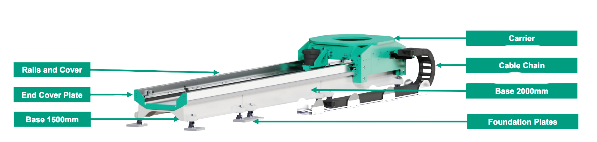

RESUMEN
El Easun 7-Axis RTU es un sistema lineal diseñado para expandir los movimientos de los robots industriales, proporcionando soluciones eficientes y de alto rendimiento para la industria automotriz y otros sectores de manufactura. Este sistema permite ampliar el alcance y la versatilidad de los robots, mejorando su capacidad operativa y flexibilidad en entornos de producción automatizados.
BENEFICIOS CLAVE
- ✅ Base sólida y estable: Fabricada en fundición para un rendimiento confiable y duradero.
- ✅ Longitud adaptable: Mínimo 3m y un máximo de 30 metros, ajustable según los requerimientos específicos de cada cliente.
- ✅ Compatibilidad universal: Compatible con robots líderes de la industria como KUKA, FANUC y ABB.
- ✅ Entrega rápida: Diseño modular que permite una producción ágil y plazos de entrega reducidos. Tiempo de entrega estándar: 16 semenas.
COMPONENTES
CARACTERISTICAS ADICIONALES
Diseño Modular
El diseño modular del FFTlinetec 7th Axis asegura un alto grado de flexibilidad con tiempos de entrega cortos. Los módulos individuales pueden combinarse libremente en incrementos de 0.5 m hasta una longitud de 30 m.
ESPECIFICACIONES TÉCNICAS
| Max. Speed | 1.89 m/s |
| Nominal Speed | 1.5 m/s |
| Max. Acceleration | 1.5 m/s² |
| Repetition Position Accuracy | (ISO 9283) ± 0.04 mm |
| Protection Class | (IEC 60529) IP 54 |
| Noise Level | < 75 dB (A) |
| Standard Colors |
Base: RAL 8500 Carrier: RAL 6016 |
| Max. Load for powered carriers | 4.000 kg |
| Max. Load for non-powered carriers | 4.000 kg |
| Max. Travel Distance | 30m |
CONTACTO
Bussiness Development Manager
Myriam García Figeroa
+52 222 429 4706
myriam.garcia@mx-fft.com
FFT Product Leader
Anahí Morales Ortíz
+52 222 421 8664
anahi.morales@mx-fft.com